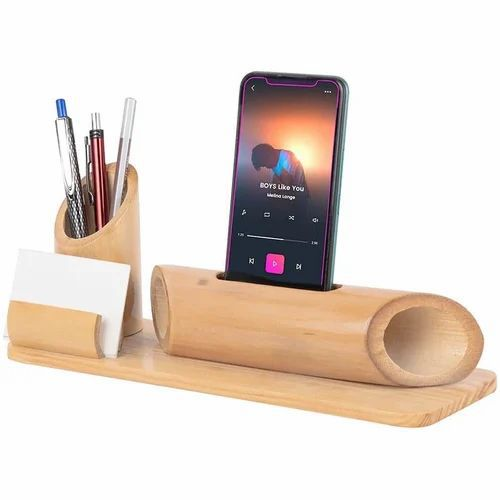

In a world obsessed with the 'new', we choose to celebrate the 'lasting'.
True sustainability isn't about buying more eco-friendly products; it's about buying fewer, better things.
A mechanical watch that ticks for generations. A solid wood bookshelf that holds the heavy stories of a
lifetime.
These aren't just objects; they are companions. By choosing materials that age gracefully—like wood and
steel—we reject the disposable culture that plagues our planet.
We embrace items that carry a human touch, imperfections and all.
Why Wood?
Wood is the most honest material we have. It breathes. It warms to the touch. It tells a story in every
grain.
Unlike plastic, which chokes our oceans, wood returns to the earth.
Choosing wooden kitchenware—like our handcrafted spoons—is a small act of rebellion against the synthetic.
It connects the simple act of cooking back to nature. It grounds us.
When we surround ourselves with organic materials, we remember our own place in the natural world.
Positive Impact of Technology
We often view technology as the enemy of nature, but it can be its greatest ally.
Advances in precision engineering allow us to craft wooden items with minimal waste,
ensuring every inch of the timber is respected.
Digital platforms connect local artisans with a global audience, allowing sustainable businesses to thrive
against mass-market giants.
When used primarily as a tool for creation rather than consumption, technology elevates craftsmanship to new
heights.
The Negative Impact

However, the shadow of technology is long. The demand for "instant" gratification fuels a culture of
disposability.
Mass production, driven by automation, fills our world with cheap plastics that never decay.
Furthermore, the constant digital noise distracts us from the tangible world—the feel of wood, the ticking
of a mechanical watch, the silence of a forest.
Over-reliance on convenience robs us of the patience required to appreciate true quality.
Sustainable Daily Essentials
Sustainability starts in the quiet moments of our morning routine.
Replacing a plastic comb with a wooden one. Using a brush with natural bristles.
These small switches reduce our reliance on petroleum-based products.
But more than that, they feel different. They feel real.
There is a profound dignity in using tools that were shaped by human hands from materials grown from the
soil.
This is the authentic human touch we strive for—products that honor both the maker and the user.
A Commitment to the Future
We are at a crossroads. We can continue down the path of convenience and waste, or we can choose the
path of intention.
At Purnika, our ethos is simple: create things that deserve to exist.
Things that don't harm the planet they came from.
Whether it's a timepiece or a timber artifact, we invite you to join us in this slower, more thoughtful
way of living.
"Nature does not hurry, yet everything is accomplished."